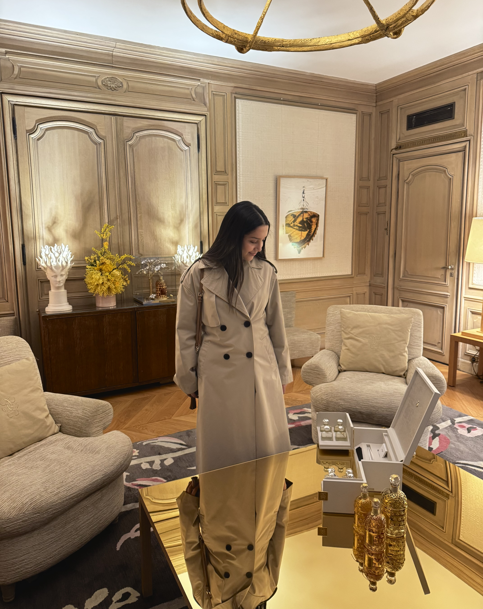
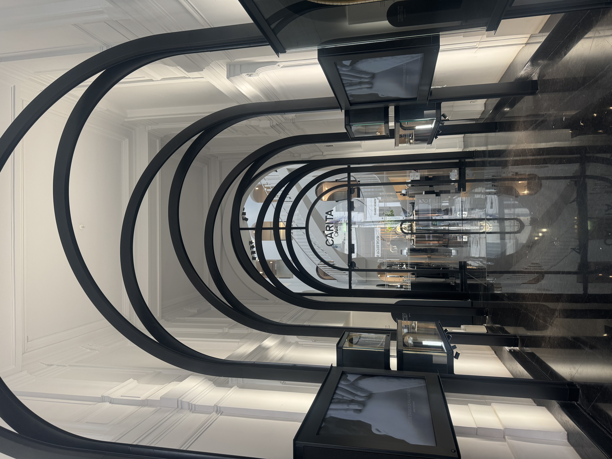
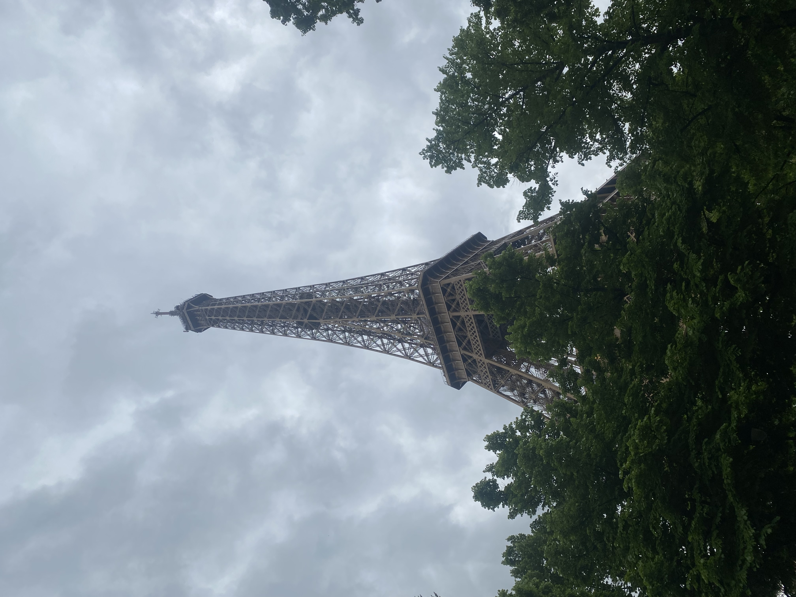

A thoughtful approach to beauty, culture, and connection
I like to share reflections, notice the quiet details of life, and create spaces where people feel seen, inspired, and genuinely connected. My world is shaped by creativity, strategy, emotional depth, and a strong appreciation for language and culture.
I come from Colombia, a country I deeply love for its warmth, richness, contrasts, and soul. Today, as I study in Paris, I keep discovering new ways to connect identity, aesthetics, and meaning.



My perspective
I am interested in the kind of luxury that goes beyond image. The kind that creates emotion, memory, transformation, and a sense of presence.
I love exploring how branding, storytelling, and personal development can come together to shape experiences that feel both elevated and deeply human.
What inspires me most
Deep conversations. Beautiful language. Cultural nuance. The emotional power of places. Elegant brands with soul. Ideas that make people feel more aware, more confident, and more alive.
I am especially inspired by spaces where strategy meets sensitivity, where intention, aesthetics, and inner growth are not separate, but part of the same experience.